FV300＋IX71｜第一輪整機粗模
先核對相對大小、主要結構與連接位置。155 個分件，掃描頭保留開蓋內構。
Blender 原始模型 · 詳細依據與限制 · 分件表 · 尺寸估值
掃描頭外框暫估 480×240×185 mm。IX71 以原廠標準配置尺寸為基準；光纖照明頭高度、接口位置與實機附件尚未量測。整機版已納入 repo 里程碑；先前掃描頭 v0.3：c2fb2e6。
整體形體
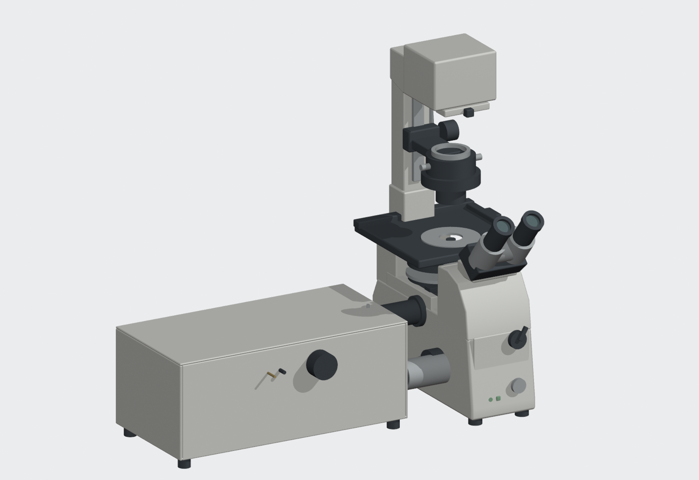
按鈕切換同角度檢查圖。Blender 內有對應的 Closed／Open View Layer。
原廠配置與粗模
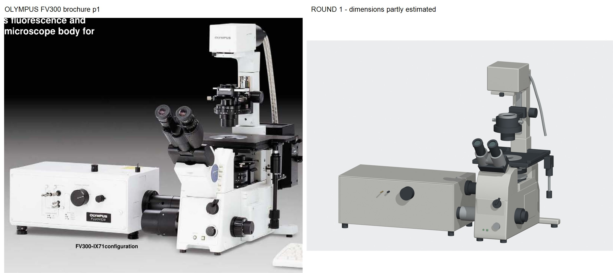
左圖出自 Olympus FV300 型錄印刷 p1，作為側接口與整機配置依據。相機角度不同，配件也可能與你的實機不同。
與你的實拍對照
左為實拍，右為近似角度模型。沒有做精確透視配準。
正面／目鏡和側接筒
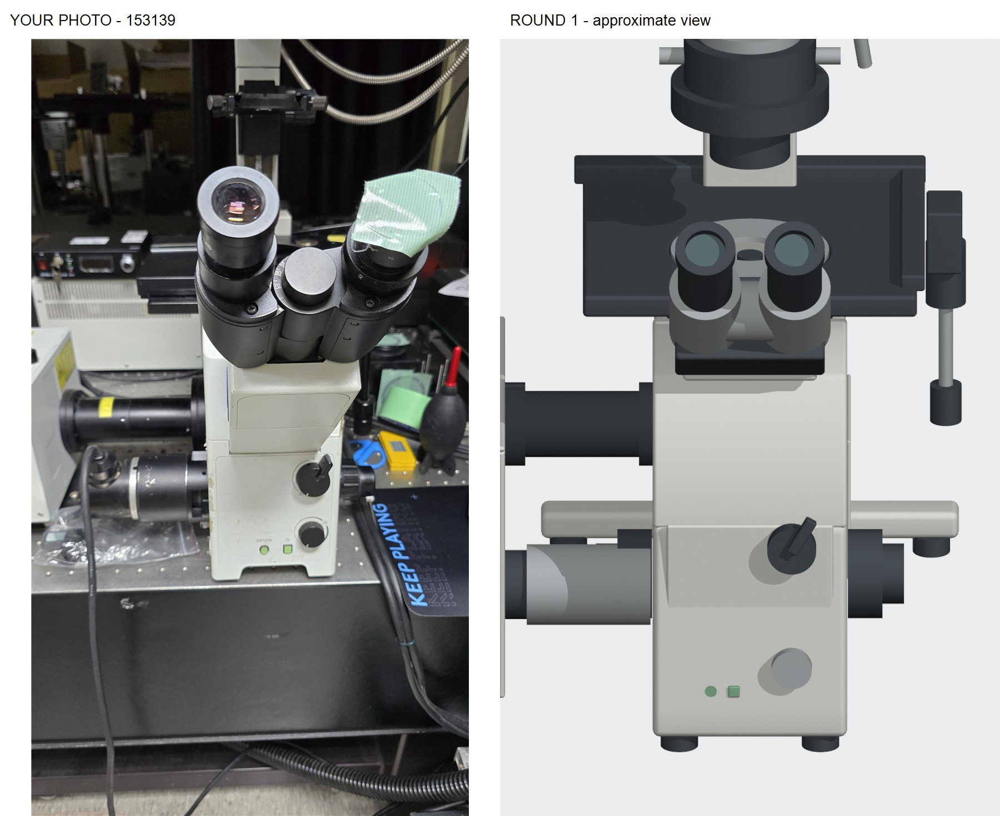
載物台下方／物鏡與機身
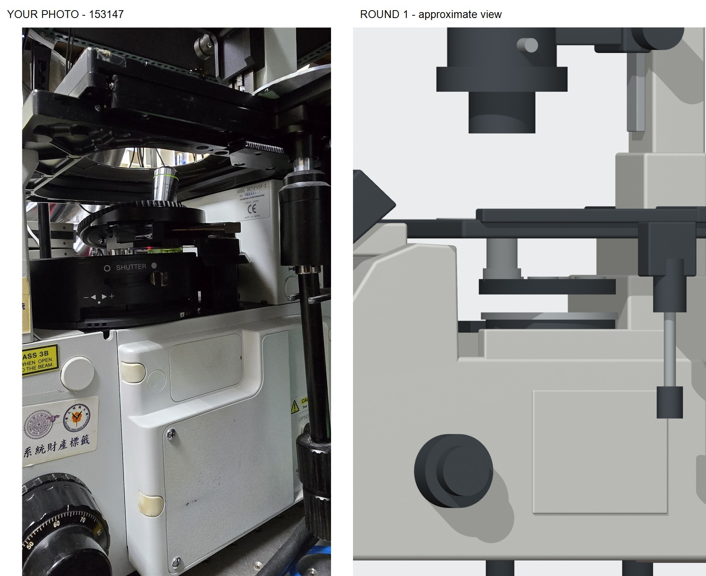
光纖照明頭／聚光鏡
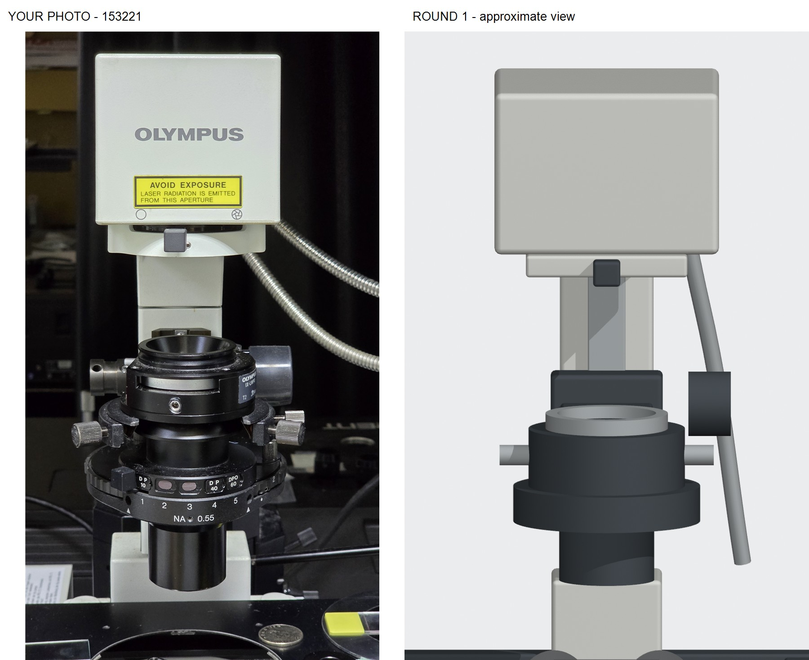
其他檢查視角
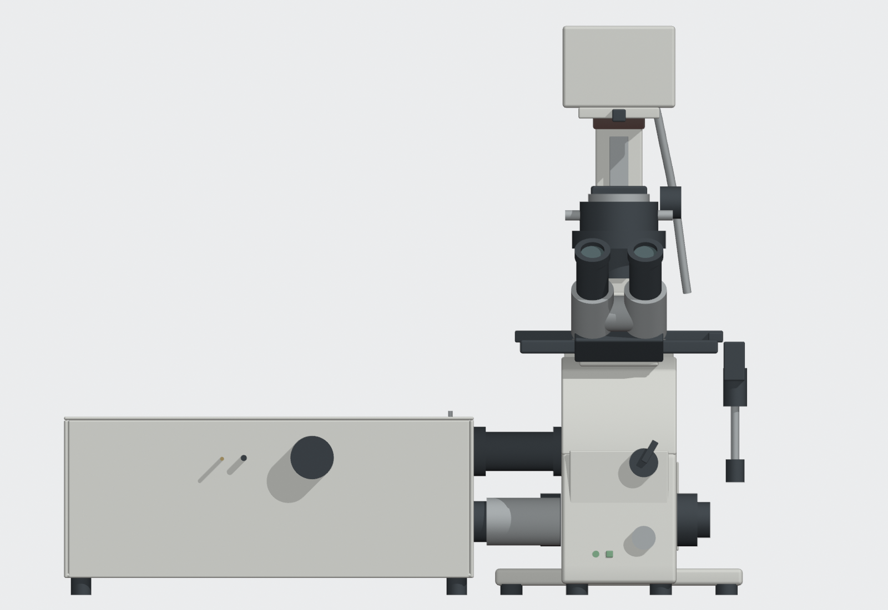
正面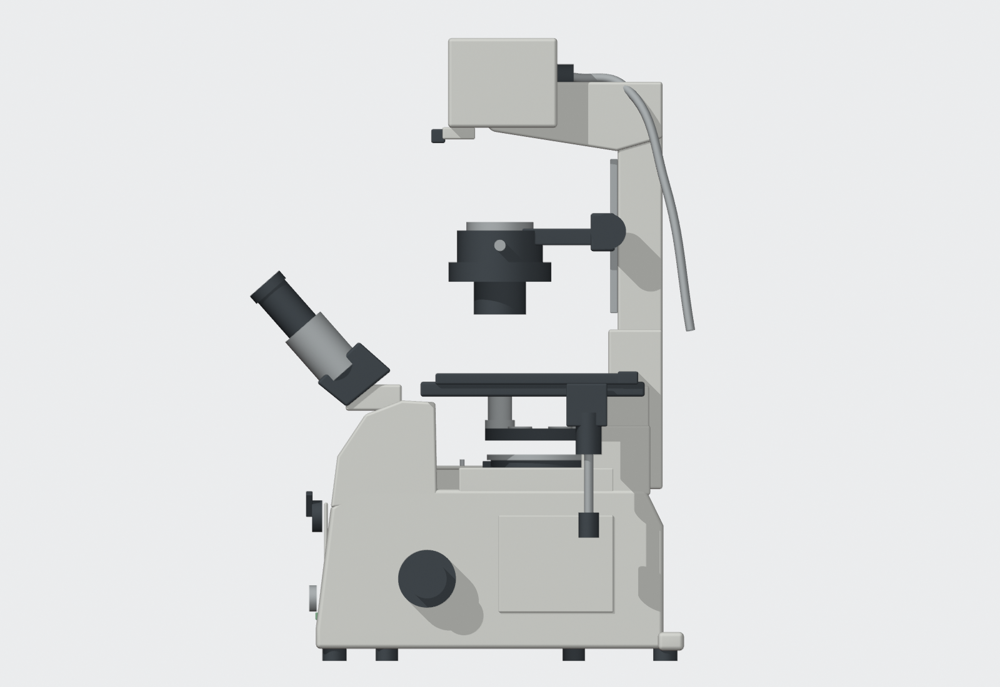
右側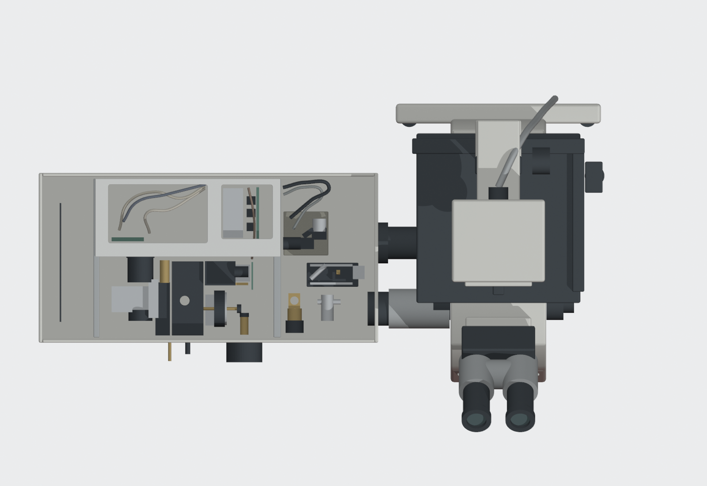
俯視開蓋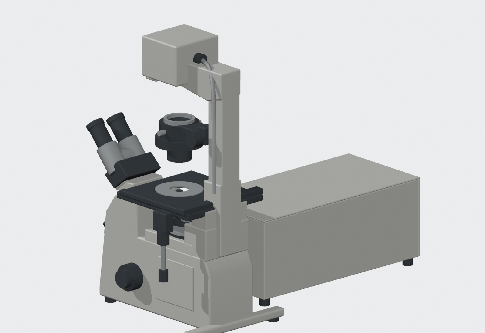
後方（背面細節多為推估）尺寸圖核對
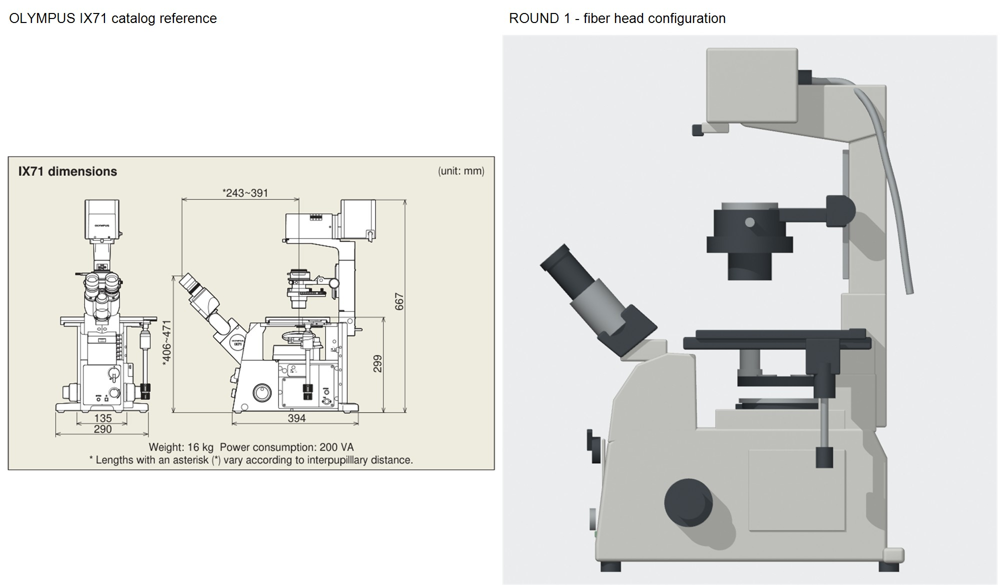
原廠標準 IX71：底座參考長 394 mm、橫向外廓 290 mm、台面高 299 mm。模型照明頭 667 mm 高是借用標準圖的首輪基準，FV 光纖配置仍待確認。尺寸圖含標準後接燈箱，模型依你的照片採光纖頭。
實際開啟檢查
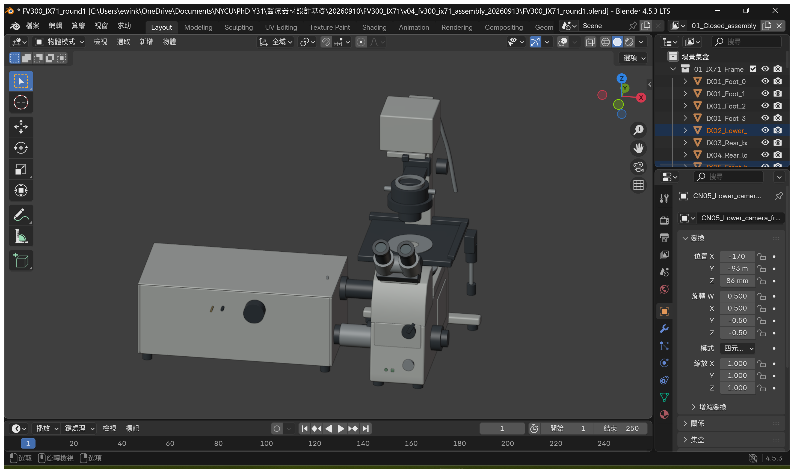
另以新的 Blender 行程重開存檔並輸出十一個視角；物鏡位於台面中央開孔內，側接筒兩端同軸。這不是實機裝配或光學驗證。
請先確認這三件事
- 掃描頭相對 IX71 的大小、殼高與左右距離。
- 目鏡、台面、聚光鏡與照明頭之間的高低和前後關係。
- 機身輪廓是否明顯過胖、過高或過長。
仍簡化：外殼曲線、平台附件、聚光鏡轉盤、目鏡座、旋鈕；底部與隱藏支撐未核對。本輪到此停止，等你確認比例。
原廠資料：FV300 型錄 · IX71／IX81 型錄